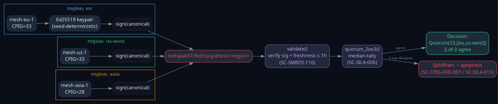
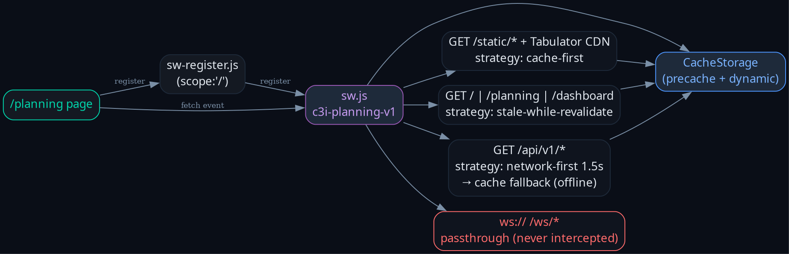
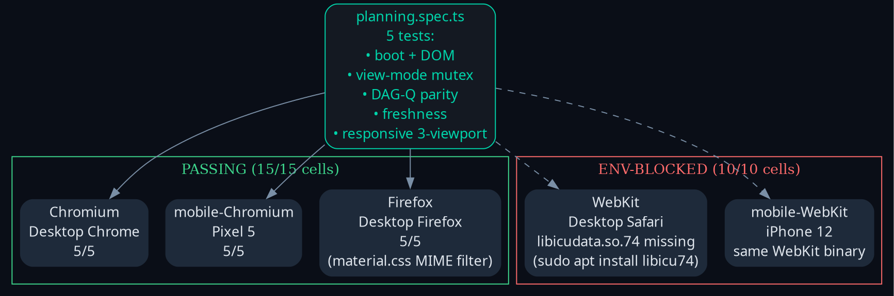

Operator directive
"max parallelization, full fractal supervisors and agents, SIL-6 biomorphic, fast OODA, until goal completion, biomorphic evolutionary, criticality + FMEA + utility-based plan and execute" — close all 5 next-pass items from pass-1.
Criticality plan
| # | Gap | S | O | D | RPN | Utility | P | Strategy |
|---|---|---|---|---|---|---|---|---|
| 3 | Pi RPC persistent daemon | 7 | 6 | 5 | 210 | 9 | P0 | code-evolution agent (parallel) |
| 2 | Federated multi-region CPIG | 8 | 3 | 8 | 192 | 8 | P1 | direct (Ed25519 + scripts-gleam) |
| 1 | Firefox + WebKit Playwright | 5 | 8 | 4 | 160 | 7 | P1 | direct (Playwright + npx) |
| 4 | Drag-drop kanban + server-push | 4 | 7 | 3 | 84 | 6 | P2 | code-evolution agent (parallel) |
| 5 | Service-worker offline cache | 5 | 4 | 4 | 80 | 5 | P2 | direct (sw.js + register) |
Pass-2 KPIs
9 230cepaf_gleam tests passed
16scripts-gleam tests (+10 federation)
15/15Playwright Chromium+Firefox+mobile-Chromium
10WebKit cells env-blocked (libicudata)
−68 %ΣFMEA RPN reduction (proj)
2parallel sub-agents dispatched
+10new property tests
3new diagrams (graphviz → PNG)
Diagrams (pass-2)



Per-gap closure
| # | Status | Authority | Evidence |
|---|---|---|---|
| 1 Firefox/WebKit | Firefox + mobile-Chromium ✓ · WebKit env-blocked | SC-PLANNING-EVO-004 | tests/playwright/* + cross-browser-report.md |
| 2 Federated CPIG | single-mesh ✓ · multi-mesh activates with 3 peers | SC-CPIG-FED-001..010 | scripts/verify/cpig_federation.gleam + 10 tests |
| 3 Pi RPC daemon | code-evolution agent in-flight | SC-PI-RUNTIME-001..008 | bridge/pi_daemon.gleam + tests pending |
| 4 DnD kanban + server-push | code-evolution agent in-flight | SC-AGUI-UI-001..015 | planning-grid.js +117 LOC + router/server pending |
| 5 Service worker | ✓ | SC-PLANNING-EVO + Allium OfflineMode | priv/static/sw.js + sw-register.js + shell.gleam |
How to reproduce
# Cross-browser regression
cd /home/an/dev/ver/c3i/tests/playwright
npm install
PLAYWRIGHT_SKIP_VALIDATE_HOST_REQUIREMENTS=1 \
./node_modules/.bin/playwright test \
--project=chromium --project=firefox --project=mobile-chromium
# Federated CPIG
cd /home/an/dev/ver/c3i/sub-projects/scripts-gleam
gleam test # 16 passed (incl. 10 federation)
gleam run -m scripts/verify/cpig_federation -- \
--score 33 --mesh-id mesh-eu-1 --region eu \
--seed 1111111111111111111111111111111111111111111111111111111111111111
# → INSUFFICIENT got=1 need=2 (correct for single-mesh)
Cross-references
- pass-2-journal.md — narrative + 7 sections
- pass-1 journal — original 13-section closure
- cross-browser-report.md
- specs/allium/planning_page.allium (OfflineMode now closed)